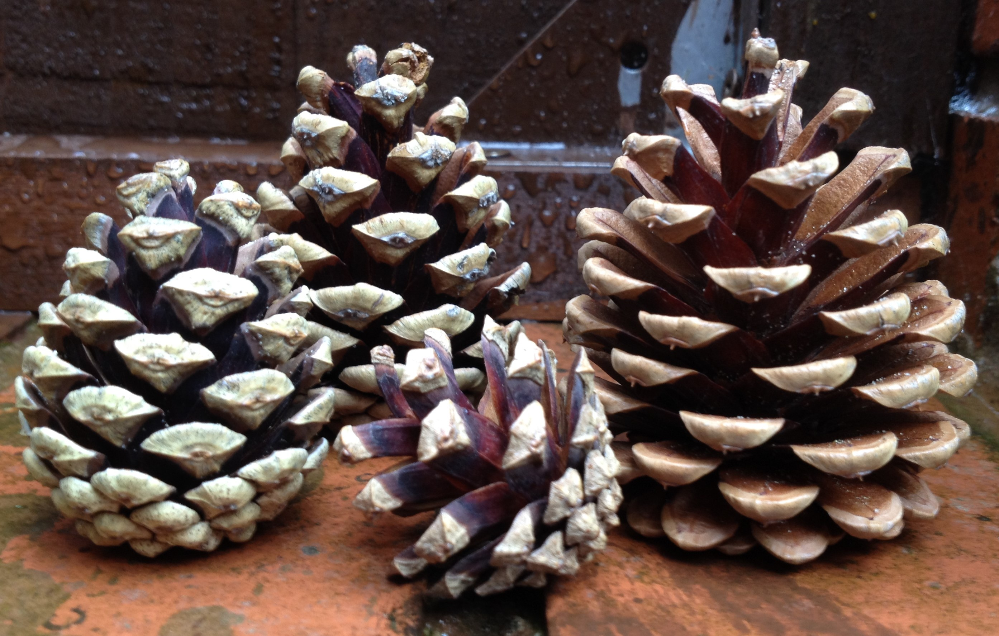
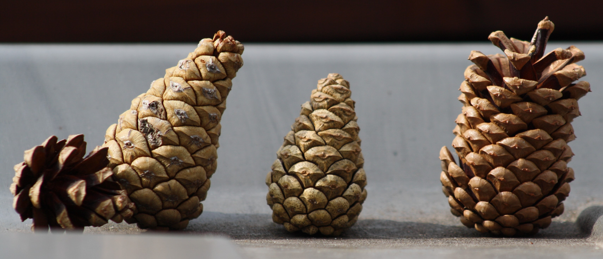

I'm pining...
22-Jun-2017 | Milku
for better weather.
It's Day 22 of 30 Days Wild and the weather here in Blackpool has become a bit cooler and damper. We knew this was going to happen...and don't start thinking that I'm psychic like Nika, the polar bear, who's going to predict the World Cup scores next year. We knew that rain was on the way because we have a natural hygrometer in our garden that can detect changes in humidity.
When the weather is wet and humid, pine cone scales swell, causing the cones to close. This prevents the lightweight seeds inside from becoming waterlogged, falling too close to the parent tree and then competing with that tree for resources. In dry weather, the outside of the scales shrink more than the inside and the scales open up. Luckily for us, pine cones will continue this behaviour even when they're not still attached to a tree.
My humans brought some pine cones home from Formby when they visited recently. They didn't quite believe that the cones would open when it's dry and close when it's damp. However, they were willing to try it out.
The long dry spell meant the pine cones were fully opened for a long time and the scepticism of my humans that there would ever be a change became entrenched.
So imagine their surprise yesterday when they looked at the cones and found they were tightly closed. There had been a shower of rain (or two) during the day and more rain was forecast. Trust me, they are the same pine cones. I saw them on my jaunt into the garden at the weekend.
My humans have had to concede that the experiment worked and they might just leave the pine cones around so they can predict future weather changes.

Actually, I've been more interested to discover that, on this day in 2011, 128000 students took part in the world's biggest chemistry experiment. As part of the International Year of Chemistry, students measured the acidity (pH) and salinity of their local water, and shared their results online. Maybe the Wildlife Trusts should have encouraged all their 30DaysWild-ers to do something like that. There have been lots of photos on their twitter feed that feature water and it'd be interesting to map the differences in water chemistry across the country.